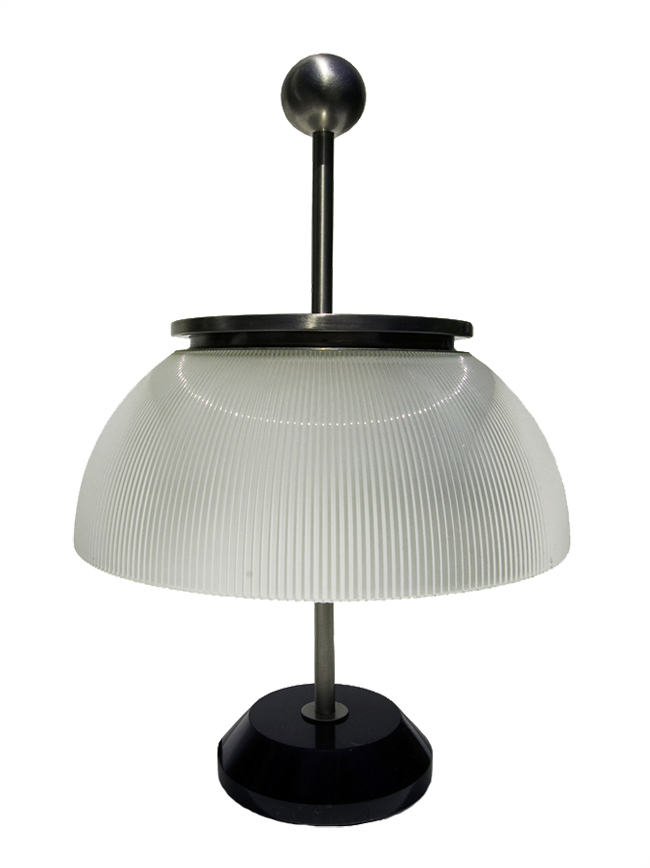
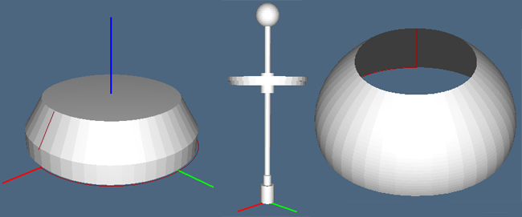
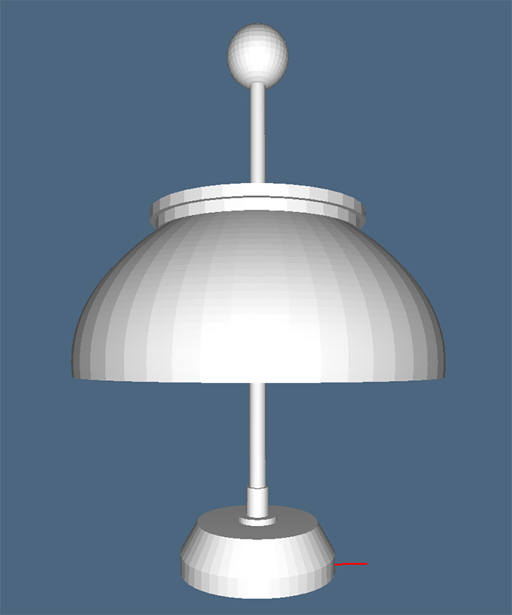

Alfa Lamp
Alpha is the first table lamp of the series Artemide designed in 1959 by Sergio Mazza. The metal nickel structure holds a bell-shaped crystal of 30 cm in diameter, while the base, black marble, has a diameter of 14 cm.

The model of the table is composed by three parts:
- Base
- Body structure
- Crystal
For the body of the lamp was used the "arc" function, generating six-cylinder with different height and diameter, properly positioned and shifted along the Z axis. To generate the sphere that concludes the casing of the lamp was created the "sphere" function, written from the structure of the "arc" one. Once generated the ball of the right diameter, it was translated along the Z axis.
Finally, the crystal was modeled in a similar way of the base: it have been appropriately draw two Bezier curves and interpolated by using the "PROFILEPROD_SURFACE". To make the idea of the light inside, the lamp's crystal has been colored with a value greater than 1.


Below is shown the result (in Plasm.js) of the modeled parts.